Theatre Plays as 'Small Worlds'?
Network Data on the History and Typology of German Drama, 1730–1930
Peer Trilcke¹, Frank Fischer², Mathias Göbel³,
Dario Kampkaspar⁴, Christopher Kittel⁵
- University of Potsdam
- Higher School of Economics, Moscow
- Göttingen State and University Library
- Herzog August Library, Wolfenbüttel
- University of Graz
These slides: https://dlina.github.io/presentations/2016-krakow/
Kraków, #dh2016 · July 14, 2016
TOC
- Introduction
- Theatre Plays as 'Small Worlds'? – Idea
- Theatre Plays as 'Small Worlds'? – Study
- Outlook
1. Introduction
DLINA Working Group
- DLINA = Digital LIterary Network Analysis
- interinstitutional working group consisting of literary scholars and computer scientists
- members: Frank Fischer, Dario Kampkaspar, Christopher Kittel, Mathias Göbel, Hanna-Lena Meiners, Peer Trilcke, Andreas Vogel
- Documentation …
DLINA Working Group
- main working corpus: "dlina Corpus 15.07" (see blog post for detailed description)
- based on TextGrid Repository
- comprises 465 German-language plays from 1731 to 1929
- objective: automated, philologically curated extraction and analysis of network data from dramatic texts and their philological interpretation
DLINA Working Group
- network data = interactions between characters
- operationalisation of 'interaction': "Two characters interact with one another if they perform a speech act within the same segment of a drama (usually a 'scene')."
- more info on the automated extraction and analysis of network data:
- "Digital Network Analysis of Dramatic Texts" (our talk at DH2015, Sydney), slides and transcription
- blog posts on our intermediary DLINA XML format, on editing rules, on our all-in-one tool dramavis
- main subject today: How do we interpret literary network data?
Moretti's Analysis of "Hamlet" (2011)

Source: newleftreview.org
"Mapping Shakespeare’s Tragedies"

Martin Grandjean's network visualisation of 6 (out of 11) Shakespearean tragedies (Dec., 2015). Full poster and explanations on Grandjean's website, also cf. his interview on PBS.org, April 22, 2016.
"Distant-Reading Showcase"

"Distant-Reading Showcase", poster presented at #DHd2016 in Leipzig (March 9, 2016).
Download in full-res (28.88 MB) via Figshare. DOI: 10.6084/m9.figshare.3101203.v1.
So let's focus on …
… the heterogeneity of drama networks.
2. Theatre Plays as 'Small Worlds'? – Idea
Interpretation Scenarios
| Historical | Typological |
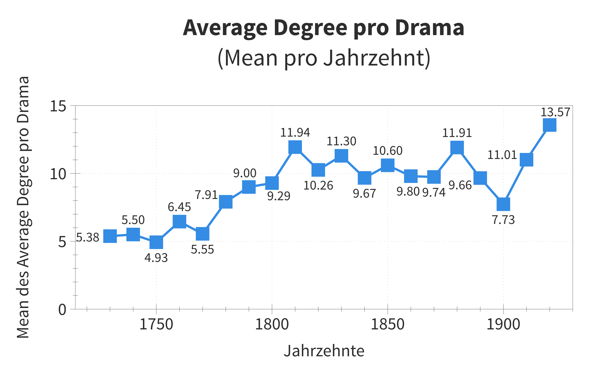 |
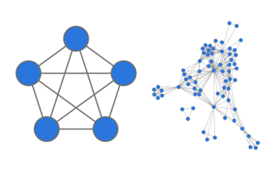 |
| Cf. our blog post "200 Years of Literary Network Data" |
Current research: types of drama networks |
Types of Drama Networks
Background hypotheses:
- Dramatic texts are context-sensitive aesthetic models of social formations, which means that …
- … dramas represent social formations (e.g., nuclear family, royal court, 'society');
- … these social formations only exist in their aesthetic representation, as models;
- … these models are potentially context-sensitive and interact with real social formations.
Types of Drama Networks:
'Small World' Concept
Approach (in reference to a particular branch of network theory):
- "small-world networks" (started by Watts & Strogatz 1998; cf. Watts 2004);
- "widespread in biological, social and man-made systems" (Watts & Strogatz 1998, 442)
- "highly clustered, like regular lattices, yet have small characteristic path lengths, like random graphs" (Watts & Strogatz 1998, 440)
- already applied on dramatic texts (Shakespeare): Stiller, Nettle & Dunbar 2003; Stiller & Hudson 2005
- we applied the concept on a much more diverse corpus by help of automatic extraction of network data
Types of Drama Networks:
'Small World' Concept
Detecting 'Small Worlds'
| Regular | 'Small world' | Random |
 |
 |
 |
| Clustering Coefficient (C) | ||
| 0,600 | 0,852 | 0,131 |
| Average Path Length (APL) | ||
| 6,261 | 2,346 | 2,258 |
Types of Drama Networks:
'Small World' Concept
'Small world' networks, definition
- Criterion 1: The clustering coefficient (C) of an observed network, in our case the character network of a dramatic text, is significantly higher than the C of a corresponding random network.
- Criterion 2: The average path length (APL) of an observed network does not differ significantly from the APL of a corresponding random network.
Types of Drama Networks:
'Small World' Concept
(Additional) 3rd Criterion: 'Scale Free'
- 'Scale free' networks: variant of 'small world' networks (described by Albert & Barabási 2002);
- these networks exhibit a node-degree distribution following a power law
Types of Drama Networks:
'Small World' Concept
Overview of All Criteria (Indicators)
- Criterion 1: The clustering coefficient (C) of an observed network, in our case the character network of a dramatic text, is significantly higher than the C of a corresponding random network.
- Criterion 2: The average path length (APL) of an observed network does not differ significantly from the APL of a corresponding random network.
- Criterion 3 ('scale free'): The node-degree distribution can be best described by a power-law regression.
3. Theatre Plays as 'Small Worlds'? – Study
Criterion 1: Clustering Coefficient
- The clustering coefficient (C) of an observed network, in our case the character network of a dramatic text, is significantly higher than the C of a corresponding random network.
- Procedure
- calculated 1,000 random networks for each individual drama network
- calculated the mean value for random networks → Clustering Coefficient (C Random)
- formed the quotient of C and C Random → Clustering Coefficient deviation (C Dev)
- identified all dramas, where quotient was significantly higher (i.e., bigger than Mean + 2 × SD)
Criterion 1: Clustering Coefficient
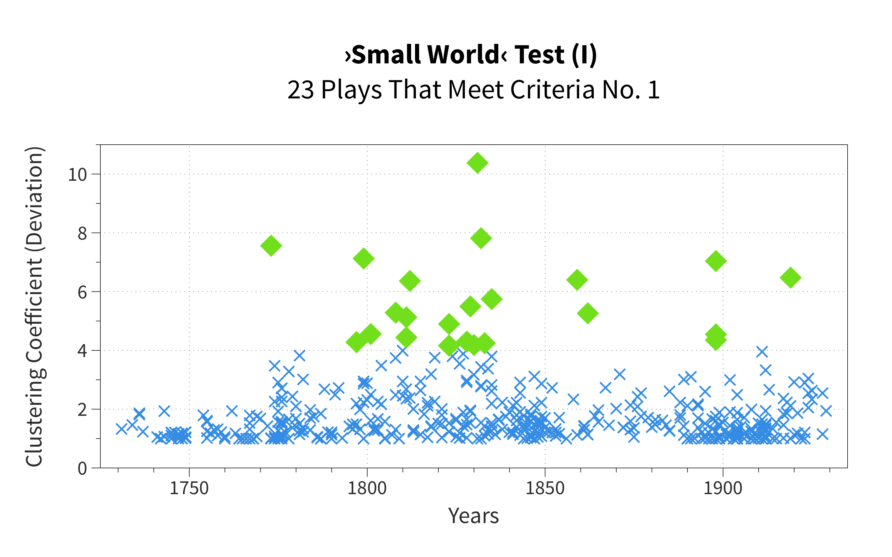
Criterion 2: Average Path Length
- The average path length (APL) of an observed network does not differ significantly from the APL of a corresponding random network.
- Procedure
- calculated 1,000 random networks for each individual drama network
- calculated the mean value for random networks → Average Path Length (APL Random)
- formed the quotient of APL and APL Random → Average Path Length deviation (APL Dev)
- excluded all plays fulfilling criterion 1, but exhibiting an average path length significantly different from that of the random network (i.e., smaller than Mean – 2 × SD or bigger than Mean + 2 × SD, respectively)
Criterion 2: Average Path Length
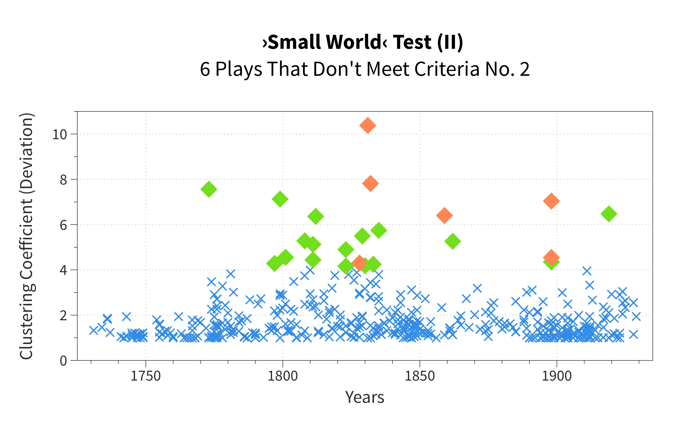
Criterion 2: Average Path Length

Intermediate Result
Dramas left after application of criteria 1 & 2:
| Title | Author | Year |
|---|---|---|
| Götz | Goethe | 1773 |
| Doktor Faust | Soden | 1797 |
| Prinz Zerbino | Tieck | 1799 |
| Die Jungfrau von Orleans | Schiller | 1801 |
| Die Hermannsschlacht | Kleist | 1808 |
| Halle | Arnim | 1811 |
| Jerusalem | Arnim | 1811 |
| Der Eheteufel | Gleich | 1812 |
| Faust | Voß | 1823 |
| Der Barometermacher | Raimund | 1823 |
| Die unheilbringende Zauberkrone | Raimund | 1829 |
| Die Walpurgisnacht | Birch-Pfeiffer | 1830 |
| Der böse Geist | Nestroy | 1833 |
| Andreas Hofer | Immermann | 1835 |
| Faust | Vischer | 1862 |
| Nero | Panizza | 1898 |
| Faust | Avenarius | 1919 |
Criterion 3: Power-Law Distribution
- The node-degree distribution can be best described by a power-law regression.
- Procedure
- calculated node-degree distribution per drama
- calculated coefficients of determination (R²) for several regressions (linear, quadratic, exponential, logarithmic, power law)
- excluded all dramas fulfilling criteria 1 & 2, but failing to meet criterion 3 (i.e., no power-law regression)
Criterion 3: Power-Law Distribution

Criterion 3: Power-Law Distribution
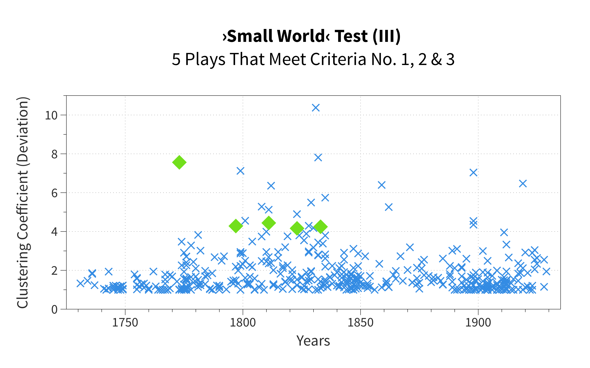
Final Result
Five dramas meeting criteria 1, 2 & 3:
| Title | Author | Year |
|---|---|---|
| Götz | Goethe | 1773 |
| Doktor Faust | Soden | 1797 |
| Jerusalem | Arnim | 1811 |
| Der Barometermacher | Raimund | 1823 |
| Der böse Geist | Nestroy | 1833 |
Discussion
Three (of many) questions:
- 1. What does it mean to assign the 'small world' status to a dramatic text?
- 2. If 'small world' dramas are an exception, a rare species: What, then, is the norm?
- 3. In addition to 'small world' dramas: are there other kinds of structural "deviations"?
1. "Theatre Plays as 'Small Worlds'",
What Does That Mean?
1. "Theatre Plays as 'Small Worlds'",
What Does That Mean?
 |
 |
Central character(s) and formation of cliques
(Goethe, "Götz")
1. "Theatre Plays as 'Small Worlds'",
What Does That Mean?
| Arnim, "Jerusalem" | Raimund, "Der Barometermacher" |
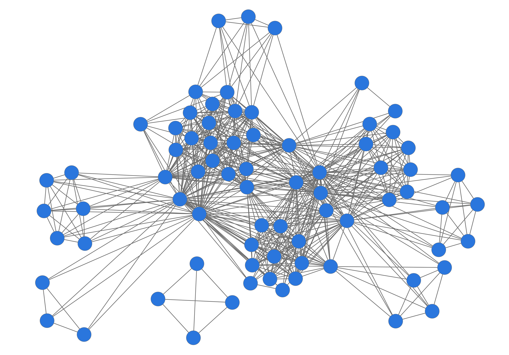 |
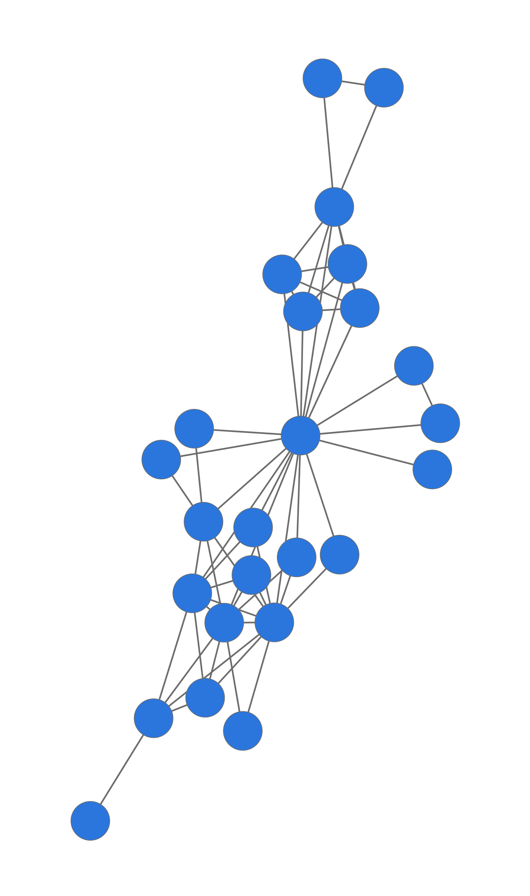 |
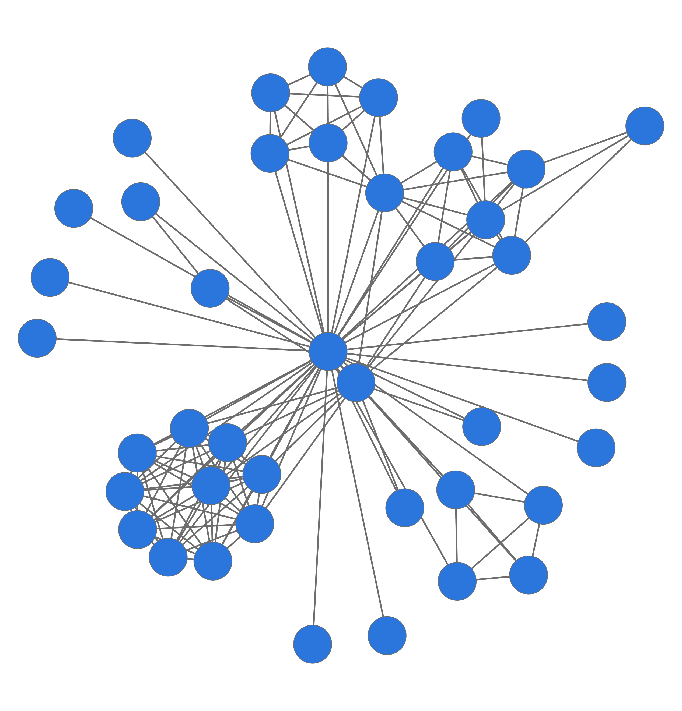 |
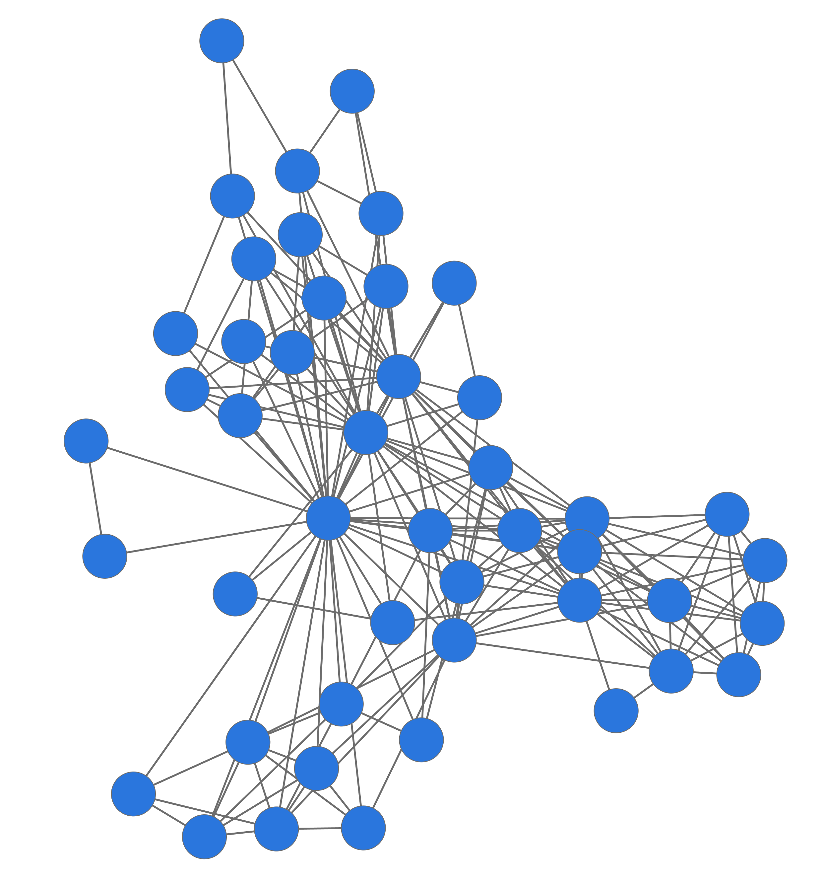 |
| Soden, "Doktor Faustus" | Nestroy, "Der böse Geist" |
2. What is the 'norm'?
2. What is the 'norm'?
'Deviation': power-law distribution in "Götz" (example)

plenty of "lower" characters – few "average" characters – very few "upper" characters
2. What is the 'norm'?
Usually ('norm'ally) we see other kinds of distributions:
 |
 |
plenty of "average" characters
3. Other kinds of structural "deviations"?
3. Other kinds of structural "deviations"?
E.g., reversed power-law regression:
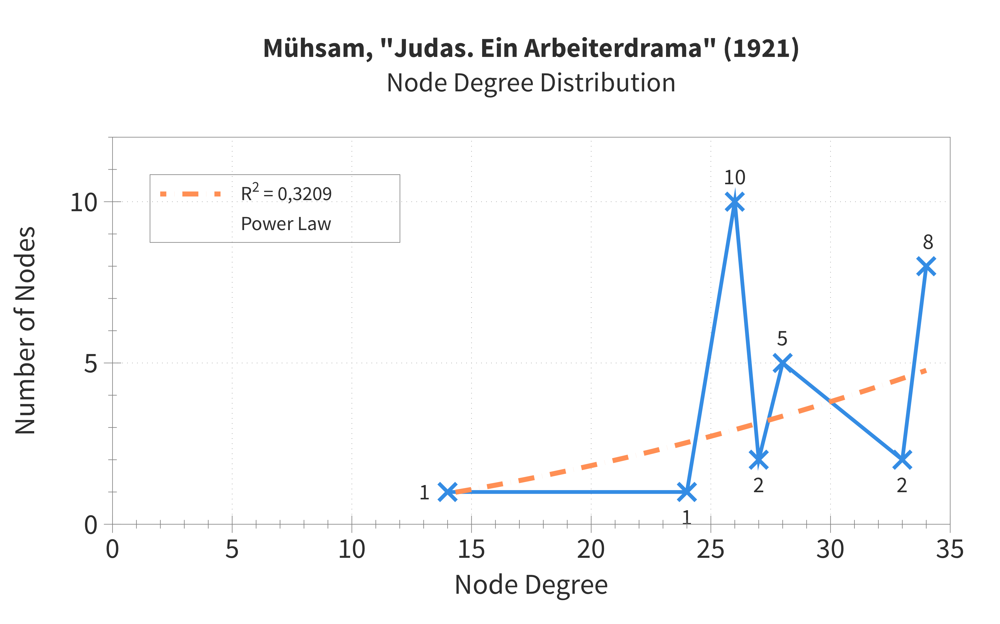3. Other kinds of structural "deviations"?
| Goethe, "Götz" Drama of the "great individual" |
Mühsam, "Judas" Drama of the crowds |
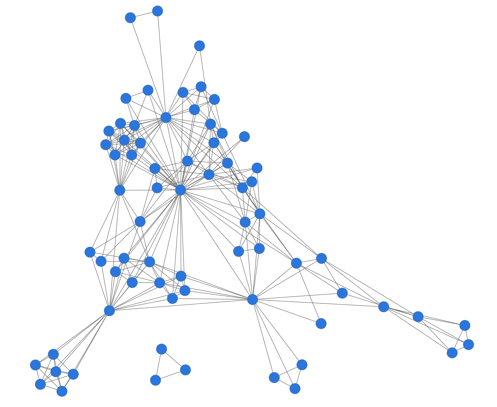 |
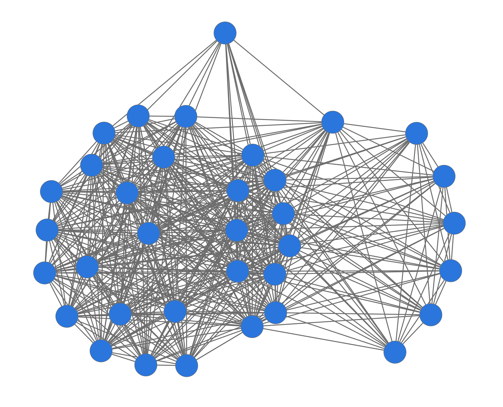 |
| Aristocratic model? | Communist model? |
4. Outlook
More Detailed Data Extraction
- Finer granulation of types of interaction
- detection of individual entrances and exits of characters for more philologically exact interpretations
- Quantitative and qualitative enrichment of character and relation data
- quantitative attributes (how much does a character actually say?) → data already extracted
- quantitative interactional attributes (how often do characters interact?) → data already extracted
- qualitative character attributes (gender, social status) → enrichment via "Play(s)" crowdsourcing app for Android
- qualitative interactional attributes (kinship) → planned
Corpus and Workflow Optimisation
- DLINA tools
- further development of all-in-one Python pipeline "dramavis": input of TEI file, DLINA XML format or structured network data (CSV) → output: graph visualisations, network and character values, random-graph values
- GUI and online platform
- social-editing app "Play(s)" currenty in beta
New Corpora, e.g.: "Theatre classique", 842 French Plays

842 character networks from 250 years of French drama history at a glance (extracted from TEI-encoded files of the "Théâtre Classique" project, see GitHub). Highlighted authors: Pierre Corneille, Molière, Racine, Crébillon, Voltaire, Euripides (negative year numbers). Result of a w33k3nd h4ck with @goebel_m & @chris_kittel.
Bibliography
- Réka Albert, Albert-László Barabási: Statistical Mechanics of Complex Networks, in: Reviews of Modern Physics 74 (2002), 47–97.
- Albert Lászlo Barabási, Eric Bonabeau: Scale Free Networks, in: Scientific American 288 (2003), 50–59.
- Frank Fischer, Mathias Göbel, Dario Kampkaspar, Peer Trilcke: [Blog] Network Analysis of Dramatic Texts, URL: http://lina.digital.
- Franco Moretti: Network Theory, Plot Analysis, in: Stanford Literary Lab Pamphlets, No. 2 (May 1, 2011).
- James Stiller, Daniel Nettle, Robin I. M. Dunbar: The Small World of Shakespeare's Plays, in: Human Nature 14 (2003), 397–408.
- James Stiller, Matthew Hudson: Weak Links and Scene Cliques Within the Small World of Shakespeare, in: Journal of Cultural and Evolutionary Psychology 3 (2005), 57–73.
- Peer Trilcke: Social Network Analysis (SNA) als Methode einer textempirischen Literaturwissenschaft, in: Philip Ajouri, Katja Mellmann, Christoph Rauen (eds.): Empirie in der Literaturwissenschaft, Münster 2013, 201–247.
- Duncan J. Watts, Steven H. Strogatz: Collective Dynamics of 'Small World' Networks, in: Nature 393 (1998), 440–442.
- Duncan J. Watts: Six Degrees. The Science of a Connected Age, New York 2003.
Infos & Updates
These slides: https://dlina.github.io/presentations/2016-krakow/
DLINA Blog: http://lina.digital
DLINA data on Github: https://github.com/dlina
"dramavis" on Github: https://github.com/lehkost/dramavis
"Play(s)" on Github: https://github.com/mathias-goebel/mobile-plays
- Twitter:
- #dlina
- Frank Fischer (@umblaetterer)
- Mathias Göbel (@goebel_m)
- Christopher Kittel (@chris_kittel)
- Peer Trilcke (@peertrilcke)
(Presentation done with reveal.js in Sublime Text 3 on Fedora 24.)